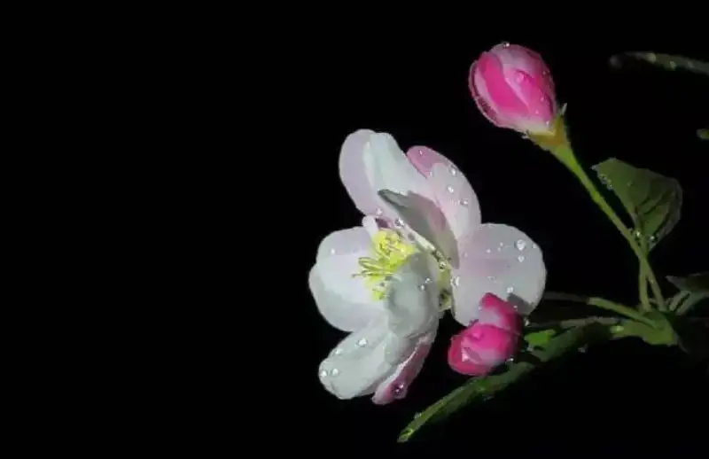
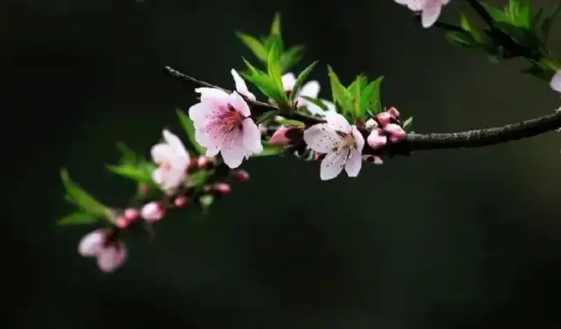
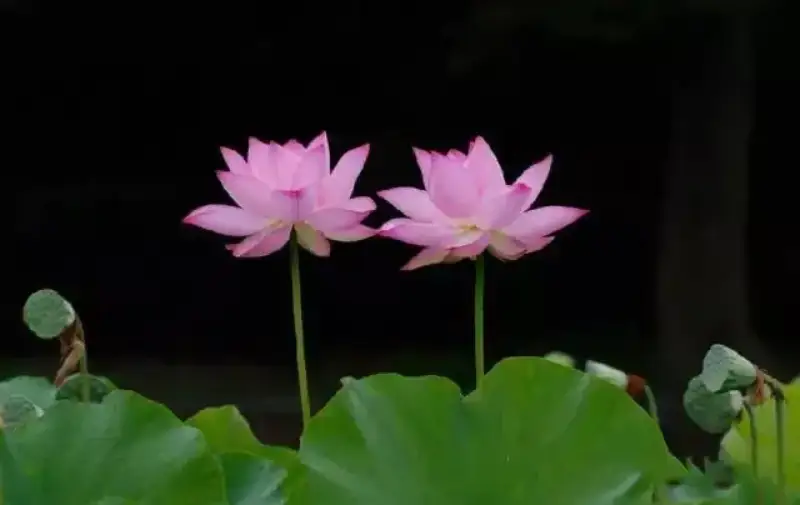
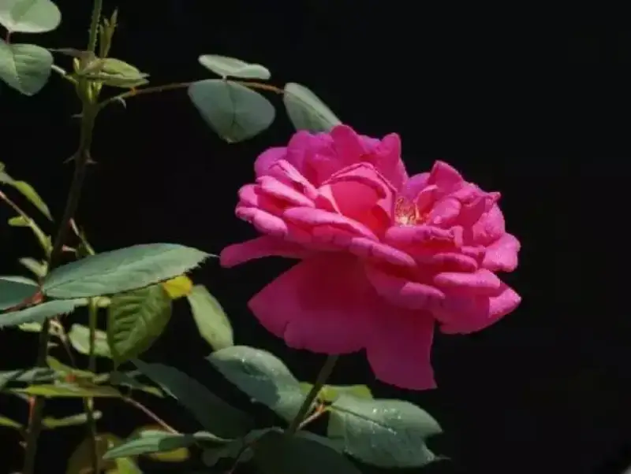
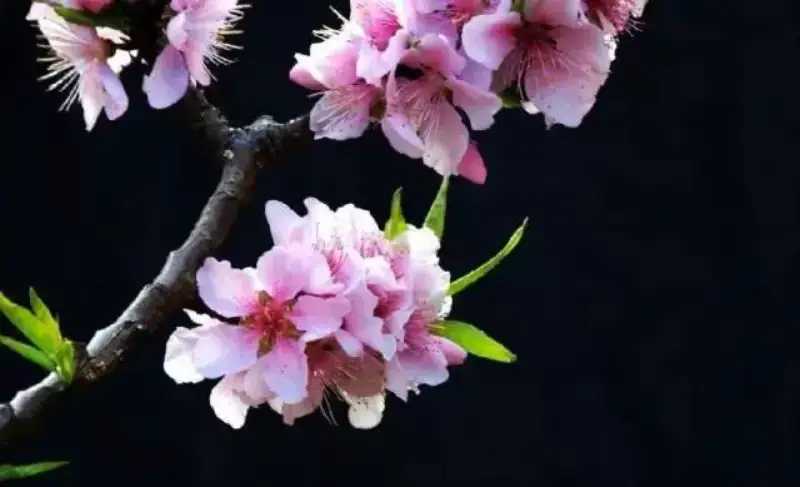

Shutter: 1/160 s Aperture: F5.6 Focal length: 90MM ISO: 100 Exposure compensation: EV-0 White balance: Auto Metering: Spot
I have seen a classic summary of photographic skill level online. It says: first-rate players use the mind, second-rate players use technique, and third-rate players use gear. If we think carefully, this really makes sense. Photography is not a simple copy of a natural subject. It is a creative act of artistic thinking, and that thinking relies on the person behind the camera. Everyone who holds a camera wants to take good photos that people like. It is safe to say that without thinking, you will never reach the effect and goal you want.

Shutter: 1/200 s Aperture: F6.3 Focal length: 105MM ISO: 500 Exposure compensation: EV-1 White balance: Auto Metering: Unknown
The study of photography is the study of light. This is the core of photographic technique. Backlighting in photography is complex, and because it is complex it is more rewarding. If you use it well, it really gives your photos a distinct look. Backlighting creates strong tonal contrast on the subject. For semi-transparent plants and flowers, a black background also gives clear contrast, which brings out the veins and texture of leaves and petals. Together with strong color contrast, it shows the detail of many fine parts.
The common ways to take pure black background photos are the following.
Use a prop, underexposure, and shutter speed.
1. Use a prop:
A black umbrella or a black cloth is enough. Place the black umbrella or cloth behind the subject (the object you are shooting). In macro or close-up shots the aperture is large, so the background naturally becomes a blurred pure black. In the photo below, the background uses black velvet cloth. You can clearly see it.
Shutter: 1/125 s Aperture: F5.6 Focal length: 135MM ISO: 100 Exposure compensation: EV-1 White balance: Auto Metering: Center-weighted average
2. Correct exposure:
Use aperture priority mode and spot-meter the subject. Meter the brightest part of the object you are shooting. At the same time, set exposure compensation down by about one stop. Then the background will be underexposed and turn black.
Shutter: 1/120 s Aperture: F4.5 Focal length: 90MM ISO: 100 Exposure compensation: EV-1 White balance: Auto Metering: Center-weighted evaluative
3. Set the shutter speed and use a fast shutter:
Focus on the object. Then shoot at a very fast speed with the flash. The flash fills the subject with light, so it enters the camera bright white. But because the shutter is too fast and the background is too dim, the sensor cannot pick it up.
Shutter: 1/250 s Aperture: F5.6 Focal length: 35MM ISO: 100 Exposure compensation: EV-0 White balance: Auto Metering: Spot
4. Choose a dark spot on site as the background:
This is similar to using a prop. Here the prop is replaced by the environment on site. For subjects with clear contrast between subject and background, the background should be dark, and the subject is best lit directly.
Use aperture priority. In my experience, do not open the aperture too wide. Spot-meter the lit part of the subject. When composing, use shadow as the background. That is, behind the subject there are leaves or branches, while the flower sits in a better-lit spot, so the contrast with the background is very large. Then use depth of field to blur the background, and it turns black. As long as the light ratio is large, meter the bright area, and the background will naturally come out black.

Shutter: 1/200 s Aperture: F5.6 Focal length: 400MM ISO: 320 Exposure compensation: EV-0 White balance: Auto Metering: Weighted
There are many ways to make a background black. These are the simplest. For the result, using an umbrella or a black cloth is the best. Using a prop also lets you choose any background color you want, such as a fully green background.
Below are concrete examples of plants and flowers shot with a black background under natural light.

I. Texture of a subject against a backlit black background.
1. Shooting notes:
I shot this photo because I often photograph plants and flowers, and I wondered how to take better photos. For a long time I did not really experiment with light or summarize my results. So I decided to run some tests on backlighting. After building up some experience, I could find regular patterns and methods, to use them better in future shooting.

Shutter: 1/160 s Aperture: F8 Focal length: 75MM ISO: 100 Exposure compensation: EV-0 White balance: Auto Metering: Weighted
2. Technique:
The photo below was shot indoors by a window with natural backlight, in macro mode. A black reflector blocked the light to create a black background. To keep it sharp, I put the camera on a tripod and used a two-second self-timer. Exposure: 1/200 s. Aperture: 2.8. Program: normal. ISO: 100. In post, I cropped to the composition I had in mind, and adjusted levels, curves, and sharpness.
Shutter: 1/200 s Aperture: F16 Focal length: 105MM ISO: 100 Exposure compensation: EV-0 White balance: Auto Metering: Spot
3. Summary:
Looking at the photos, a subject shot against a backlit black background shows good tonal texture. Water drops on the leaves are clearly visible in the sunlight, with bright reflection points that show strong lighting. Leaf veins and texture stand out. The semi-transparent light has strong depth, and the color shows the strong contrast that color photography should highlight.
Shutter: 1/160 s Aperture: F4.5 Focal length: 50MM ISO: 100 Exposure compensation: EV-0 White balance: Auto Metering: Spot
When shooting, choose a time with strong sunlight, to show the depth of the light and give the viewer a strong visual impact. If you keep the subject simple when framing and keep the main and secondary parts clear, the result is even better, and it may make people genuinely praise you. That is exactly what a shooter hopes for. The experience of using this method later gave me great encouragement.
Shutter: 1/125 s Aperture: F4.0 Focal length: 35MM ISO: 100 Exposure compensation: EV-0 White balance: Auto Metering: Spot
By comparison, this result is hard to reach with the front or side light we usually use. In practicing flower photography, I deliberately used natural light and a manually made black background many times to shoot flowers.
With a companion's help, I used a black lightproof garment he wore to block the light behind the backlit subject. It became a movable black background with a good effect. I set the shooting mode, pressed the shutter, and finished the shot. Of course, post-processing is needed to make a digital photo truly show the shooting result and intent. The images below are examples of this practice.

Shutter: 1/125 s Aperture: F3.5 Focal length: 50MM ISO: 100 Exposure compensation: EV-0 White balance: Auto Metering: Evaluative
II. Using a black background in a natural setting
The manual black background works well for low plants and flowers, but it is not convenient for subjects higher up. When you can only shoot from far away with a long lens, a manual black background is nearly impossible. Then it is worth thinking hard about how to use the natural setting together with technique. Here is a case of a lucky mistake, a shoot I will never forget. Look closely at the photo below. Would you believe it was shot outdoors in natural light?
Shutter: 1/160 s Aperture: F4.0 Focal length: 40MM ISO: 100 Exposure compensation: EV-0 White balance: Auto Metering: Unknown
The photo above was shot with a short lens. Do you know how it got a backlit black background in strong natural light? I studied it carefully and thought about it again and again after shooting; it took real effort. Now let me recall and tell you how I shot it, to lift the mystery. In the viewfinder, the background was a row of tall cypress trees about 20 meters away, like a gray-black wall. To the eye in the viewfinder, the background was not as black as the photo you see now. I just hoped the background would be dark enough to set off the bright tones of the subject. So I focused, set the speed to auto, and pressed the shutter. When the print came out, I was very surprised. I had not expected the black background to look so much better than I imagined when shooting.

Shutter: 1/160 s Aperture: F4.0 Focal length: 105MM ISO: 100 Exposure compensation: EV-0 White balance: Auto Metering: Center-weighted evaluative
Later I analyzed the cause. I had set aperture priority with auto speed. When the strongly lit subject reached the right exposure, the camera closed the shutter automatically, so the background turned dark from underexposure. That is how I got the photo you see now. This made me want to try this method again, to shoot a black background using natural light.
Shutter: 1/40 s Aperture: F7.1 Focal length: 51MM ISO: 80 Exposure compensation: EV-0 White balance: Auto Metering: Spot
The flower photo above was a test shot using the method I summarized. Part of the flower is not in sharp focus. But this was only an experiment. At the time I only wanted to open the aperture to blur the background. That made the depth of field too shallow and some parts out of focus. I made a basic, common-sense mistake. I am a bit embarrassed.
The subjects above were only flowers, but I also used this technique for portraits in outdoor natural light. Once you master it, backlit black-background portraits can sometimes rival studio results. The beauty of natural light can even be stronger than artificial light. You will get good work that surprises you. Try it out. Because the theme must match the content, I will only mention it to make you think, and I will not show an example here.
Shutter: 1/60 s Aperture: F3.8 Focal length: 50MM ISO: 100 Exposure compensation: EV-0 White balance: Auto Metering: Spot
III. Limits of the technique
No method works for everything. As I said above, you will notice that all of this uses natural light to create a black background by hand. There are two conditions, and both are needed. The light must have some strength, or the result is poor. See the photo below.
This photo was shot in the morning. You can see it lacks visual impact in the bright area. Otherwise it would have been a good photo. This tells us that on an overcast day with diffused light, you must give up this technique. We rely on the strong contrast between bright and dark to expose the subject correctly and force the background into underexposure, which creates the black background.
When shooting, pay attention to how much of the frame the subject fills. Let the subject take most of the frame and meter off the subject. Because metering systems differ in layout and method, if you do not master it, the subject will be over or under exposed, which affects the contrast of the black background.
Conclusion:
For pure black background photos, the subject must be simple, so the light can show well. Theory is fixed. The key is to practice more. Practice gives truth, and you can work out a shooting method that suits you.